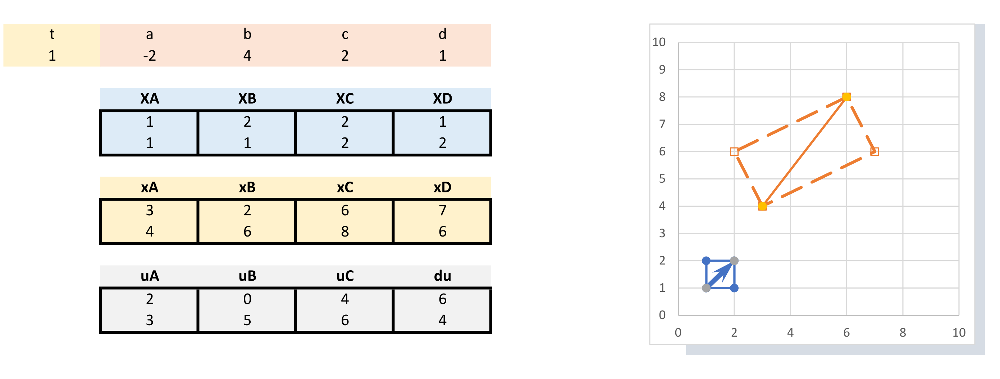
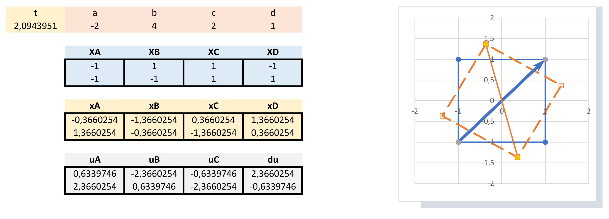

Übungsbeispiel: Deformationsgradient#
Vorabbemerkungen#
Das Beispiel dient zur Veranschaulichung und Interpretation des Deformationsgradienten und der daraus abgeleiteten Verzerrungstensoren
Beispiel 01#
Gegeben ist die folgende Bewegung (2 dim.):
\(\boldsymbol{x}=x_i=\begin{bmatrix}
x_1\\
x_2\\
\end{bmatrix} \) mit
\({x}_1=(a\cdot t+1)X_1+b\cdot t X_2\)
\({x}_2=c\cdot t X_1+(d\cdot t+1) X_2\)
wobei sich über die Zeit \(t\) die Verformung ensprechend skaliert.
Stellen Sie die entsprechende Verformung eines Vierecks dar#
Um die Bewegung besser zu Interpretieren, stellen Sie die sich für die Eckpunkte eines Vierecks ergebende Verformung dar. Das Viereck ist sozusagen der Körper, dessen Bewegung mit den Gleichungen beschrieben wird.
Definieren Sie also vier beliebige Eckpunkte \(\boldsymbol{X}^A\), \(\boldsymbol{X}^B\), \(\boldsymbol{X}^C\), \(\boldsymbol{X}^D\).
Berechnen Sie deren neue Koordinaten \(\boldsymbol{x}^A\), \(\boldsymbol{x}^B\), \(\boldsymbol{x}^C\), \(\boldsymbol{x}^D\) für beliebige Werte für \(a\), \(b\), \(c\), \(d\) und die Zeit \(t\),
Berechnen Sie die Verschiebungsvektoren \(\boldsymbol{u}^A\), … der Eckpunkte und stellen Sie die Ausgangs- und die Momentankonfiguration (verformtes Viereck) dar.
Hier ist ein Beispiel für die Umsetzung in EXCEL

Berechnen Sie den Deformationsgradienten#
Berechnen Sie zunächst allgemein den Deformationsgradienten \(\boldsymbol{F}\). Definieren Sie sich einen Vektor \(d\boldsymbol{X}\) (z.B. die Diagonale des Vierecks) und berechnen über den Deformatoinsgradienten den Vektor \(d\boldsymbol{x}\). “Finden” Sie \(d\boldsymbol{x}\) in der deformierten Struktur.
Berechnen Sie die Tensoren \(\boldsymbol{C}=\boldsymbol{F}^{T}\cdot\boldsymbol{F}\) bzw. \(C_{ik}=F_{li} F_{lk}\) und \(\boldsymbol{B}=\boldsymbol{F}\cdot\boldsymbol{F}^{T}\) bzw. \(B_{ik}=F_{il} F_{kl}\) und versuchen Sie diese für einfache Bewegungen zu interpretieren.
Beispiel 02#
Gegeben ist die folgende Bewegung (2 dim.):
\(\boldsymbol{x}=x_i=\begin{bmatrix}
x_1\\
x_2\\
\end{bmatrix} \) mit
\({x}_1=cos(t) X_1+ sin(t) X_2\)
\({x}_2=-sin(t) X_1+cos(t) X_2\)
wobei sich über die Zeit \(t\) die Verformung ensprechend skaliert.
Stellen Sie die entsprechende Verformung eines Vierecks dar#
Gehen sie wie bei dem Vorangegangenen Beispiel vor. Wählen Sie aber ein Quadrat um den Urspung als “Körper”.
Hier ist ein Beispiel für die Umsetzung in EXCEL

Berechnen Sie den Deformationsgradienten#
Berechnen Sie den Deformationsgradienten \(\boldsymbol{F}\) und die Tensoren \(\boldsymbol{C}\) und \(\boldsymbol{B}\). Was fällt auf?